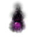
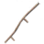

Peces y varios
Peces y varios en Valheim – 33 objetos con bioma, origen, herramienta necesaria, receta y uso.
No se encontró ningún objeto.
 Arenque gigante
Arenque gigante
Ya fermentado, este pez huele peor que el pantano del que vino.
Cómo conseguirlo
- Pesca: Pantano · Cebo: Carnada apestosa
Uso
- Ingrediente para: Gorro de pescar, Pescado crudo
 Aros de barril
Aros de barril
Estos anillos de metal son perfectamente redondos y sirven para mantener unido un barril. ¡Solo tienes que añadir madera!
Cómo conseguirlo
- Comprar: Haldor · 100 monedas (× 3)
Uso
- Material de construcción para: Barril
 Atún
Atún
Pollo del mar...
Cómo conseguirlo
- Pesca: Océano · Cebo: Carnada pesada
Uso
- Ingrediente para: Gorro de pescar, Pescado crudo
 Bacalao de coral
Bacalao de coral
Ha visto cosas... cosas muy perturbadoras...
Cómo conseguirlo
- Pesca: Océano · Cebo: Carnada pesada
Uso
- Ingrediente para: Gorro de pescar, Pescado crudo
 Campana
Campana
¿Por quién repica la campana?
Cómo conseguirlo
- Fabricar: Forja negra a partir de 3 ×
 Fragmento de campana
Fragmento de campana
Uso
- Invoca al jefe: Fader (3 ×)
 Cofre de latón de Hildir
Cofre de latón de Hildir
Propiedad de Hildir. En caso de pérdida, se ruega su devolución.
Cómo conseguirlo
- Lo suelta: Brenna · Bosque negro
 Cofre de plata de Hildir
Cofre de plata de Hildir
Propiedad de Hildir. En caso de pérdida, se ruega su devolución.
Cómo conseguirlo
- Lo suelta: Geirrhafa · Montaña

Espíritu destrozadoLos restos de Yagluth, un retorcido espíritu separado entre este mundo y el siguiente.
Cómo conseguirlo
- Lo suelta: Yagluth · Llanuras · 3 ×
Uso
- Material de construcción para: Fuente de Wisp
 Harina de avena
Harina de avena
Avena finamente molida, con mucho potencial.
Cómo conseguirlo
- Procesar: Molino de viento a partir de
 Avena
Avena
Uso
- Ingrediente para: Carne en pan, Desayuno del norte, Masa para tortita al horno, Poteitr sin hornear, Tortitas
 Harina de cebada
Harina de cebada
Perfecta para hacer pan.
Cómo conseguirlo
- Procesar: Molino de viento a partir de
 Cebada
Cebada
Uso
 Huevo
Huevo
Mantenlo tibio para ver que sale... pero antes que nada, ¿Qué vino primero?
Cómo conseguirlo
- Comprar: Haldor · 1500 monedas · tras derrotar a Yagluth
- Cofres: Misión de Hildir: Torre sellada · 55 % de probabilidad
Uso
- Ingrediente para: Huevo cocinado, Pan dulce sin hornear, Tortilla de hongos, Tortitas
 Huevo de buicán
Huevo de buicán
Cálido al tacto y lleno de proteínas.
Cómo conseguirlo
- Lo suelta: Buicán · Tierra de Ceniza · 1–2 × · 50 % de probabilidad
- Recoger: Nido de buitre
Uso
- Ingrediente para: Pastel de masa asada crudo
 Huevo de dragón
Huevo de dragón
Pesa bastante más de lo que parece y emite una especie de zumbido.
Cómo conseguirlo
- Recoger: Nido de draco (huevo)
 Kit de barbería
Kit de barbería
Instrumental para barberos de prestigio.
Cómo conseguirlo
- Comprar: Hildir · 600 monedas
Uso
- Material de construcción para: Barbería
 Lágrima dracónica
Lágrima dracónica
Las últimas lágrimas congeladas de un dragón. Irradian una energía misteriosa.
Cómo conseguirlo
- Lo suelta: Moder · Montaña · 10 ×
Uso
- Material de construcción para: Mesa de artesanía
 Llave de la cripta
Llave de la cripta
Está cubierta de barro endurecido y huele a rancio.
Cómo conseguirlo
- Lo suelta: El Sabio · Bosque negro
 Llave intrincada
Llave intrincada
Si hay una llave, entonces debe de haber una cerradura.
Cómo conseguirlo
- Lo suelta: Hexen · Praderas, Bosque negro, Pantano, Montaña, Llanuras, Tierras Nubladas, Tierra de Ceniza, Norte profundo, Océano · 10 % de probabilidad
- Cocinar: Forja de escarcha a partir de
 Pieza fundida: llave intrincada
Pieza fundida: llave intrincada
 Lucio
Lucio
Un pez de agua fresca que necesita de mucho condimento.
Cómo conseguirlo
- Pesca: Praderas, Bosque negro, Llanuras · Cebo: Cebo
Uso
- Ingrediente para: Gorro de pescar, Pescado crudo
 Magmapez
Magmapez
¡Algunos dicen que este pez pone sus huevos directamente en lava fundida!
Cómo conseguirlo
- Pesca: Tierra de Ceniza · Cebo: Carnada caliente
Uso
- Ingrediente para: Gorro de pescar, Pescado crudo

Mango de guadañaUna base resistente para una herramienta.
Cómo conseguirlo
- Comprar: La bruja del pantano · 200 monedas · tras derrotar a Moder
Uso
- Ingrediente para: Guadaña
 Mero
Mero
¡Es mejor servido con muchos carbohidratos!
Cómo conseguirlo
- Pesca: Llanuras · Cebo: Carnada picosa
Uso
- Ingrediente para: Base de hidromiel: fuerza de trol, Gorro de pescar, Pescado crudo
 Perca
Perca
Una sabrosa carne blanca de pescado.
Cómo conseguirlo
- Pesca: Praderas, Bosque negro, Llanuras · Cebo: Cebo
Uso
- Ingrediente para: Base de hidromiel: Vananidir, Gorro de pescar, Pescado crudo
 Pez globo
Pez globo
Sabroso cuando es cocinado correctamente, aunque el sabor tiene cierto picor.
Cómo conseguirlo
- Pesca: Tierras Nubladas, Océano · Cebo: Carnada brumosa
Uso
- Ingrediente para: Gorro de pescar, Pescado crudo
 Pez troll
Pez troll
Este pez es una molestia en las corrientes locales.
Cómo conseguirlo
- Pesca: Bosque negro · Cebo: Carnada musgosa
Uso
- Ingrediente para: Base de hidromiel: Fuerza de trol, Gorro de pescar, Pescado crudo
 Rape
Rape
¡La luz colgando hace que sea más fácil ver ese bonito rostro!
Cómo conseguirlo
- Pesca: Tierras Nubladas · Cebo: Carnada brumosa
Uso
- Ingrediente para: Gorro de pescar, Pan de pescado sin cocinar, Pescado crudo
 Rompedor de sellos
Rompedor de sellos
Un objeto usado para romper un sello Dvergr.
Cómo conseguirlo
- Fabricar: Mesa de galdr a partir de 9 ×
 Fragmento del rompedor de sellos
Fragmento del rompedor de sellos
 Salmón norteño
Salmón norteño
A este pez le gusta que el agua esté casi congelada.
Cómo conseguirlo
- Pesca: Norte profundo · Cebo: Carnada helada
Uso
- Ingrediente para: Gorro de pescar, Pescado crudo
 Semilla milenaria
Semilla milenaria
Si te la acercas al oído, oirás unos tenues susurros que provienen de su interior...
Cómo conseguirlo
- Lo suelta: Grisucio Bruto · Bosque negro · 33 % de probabilidad
- Destruir: Nido de enanos grises
Uso
- Ingrediente para: Corazón del Bosque
- Invoca al jefe: El Sabio (3 ×)
 Silla de alce
Silla de alce
Un alce es una criatura noble, pero con una silla así quizá permita ser montado.
Cómo conseguirlo
- Fabricar: Forja negra (nivel 2) a partir de 4 ×
 Oro sanguino, 5 ×
Oro sanguino, 5 ×  Piel de foca, 5 ×
Piel de foca, 5 ×  Leño de construcción, 15 ×
Leño de construcción, 15 ×  Hilo de lino
Hilo de lino
 Silla de cenicerdo
Silla de cenicerdo
La parte trasera de un cenicerdo es bastante abultada, por lo que necesitarás una silla de montar si quieres montarlo.
Cómo conseguirlo
- Fabricar: Forja negra (nivel 2) a partir de 6 ×
 Flametal, 20 × Hilo de lino, 4 ×
Flametal, 20 × Hilo de lino, 4 ×  Tendón de Morgen
Tendón de Morgen
 Silla de montar para luey
Silla de montar para luey
Úsala en un luey para poder montarlo.
Cómo conseguirlo
- Fabricar: Banco de trabajo a partir de 10 ×
 Trozos de cuero, 20 × Hilo de lino, 15 ×
Trozos de cuero, 20 × Hilo de lino, 15 ×  Metal negro
Metal negro
 Tetra
Tetra
Después de haber pasado toda su vida en la oscuridad, ya no necesita ojos.
Cómo conseguirlo
- Pesca: Montaña · Misión de Hildir: Caverna aullante, Cueva helada · Cebo: Carnada fría
Uso
- Ingrediente para: Gorro de pescar, Pescado crudo
 Tótem de fuling
Tótem de fuling
Canaliza el poder milenario de Yagluth.
Cómo conseguirlo
- Lo suelta: Fuling berserker · Llanuras · 10 % de probabilidad
- Cofres: Stonehenge · 8,1 % de probabilidad
- Recoger: Torre de piedra (Montañas), Aldea fuling
Uso
- Invoca al jefe: Yagluth (3 ×)